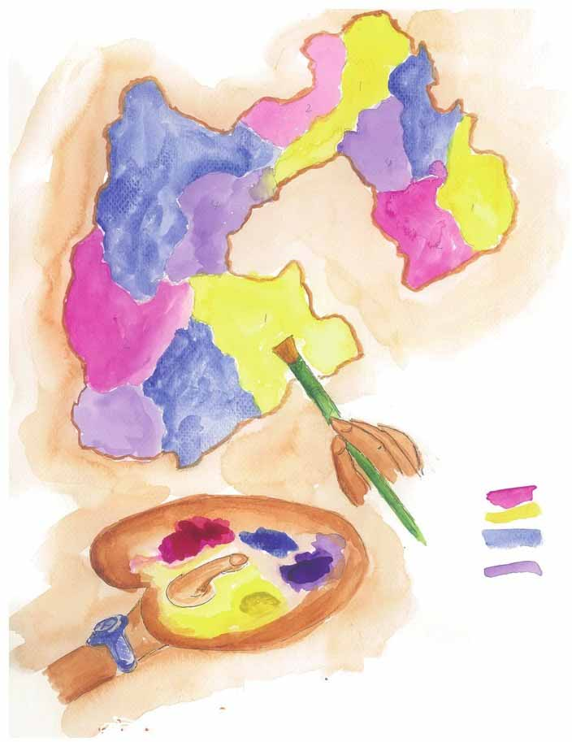
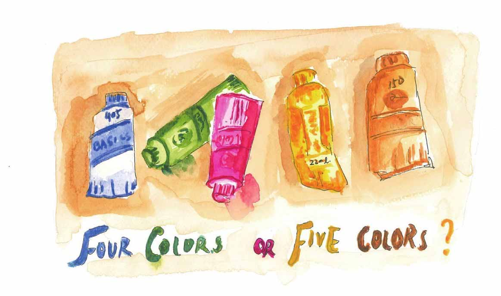
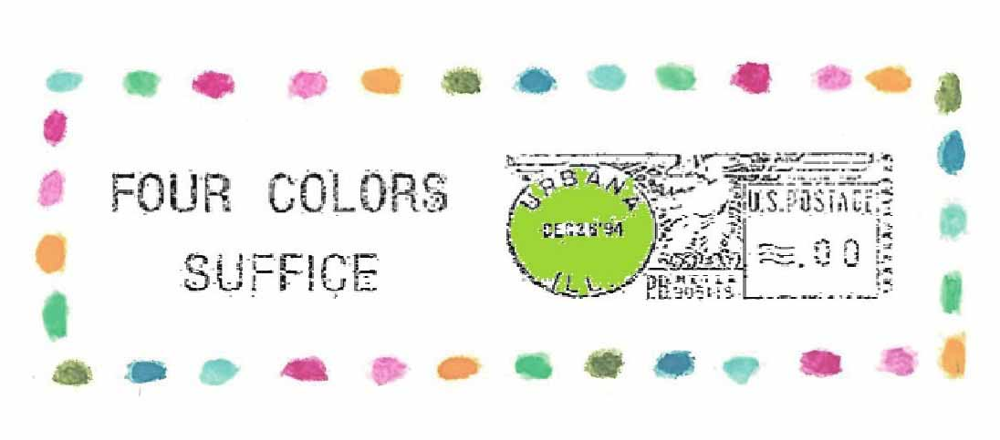
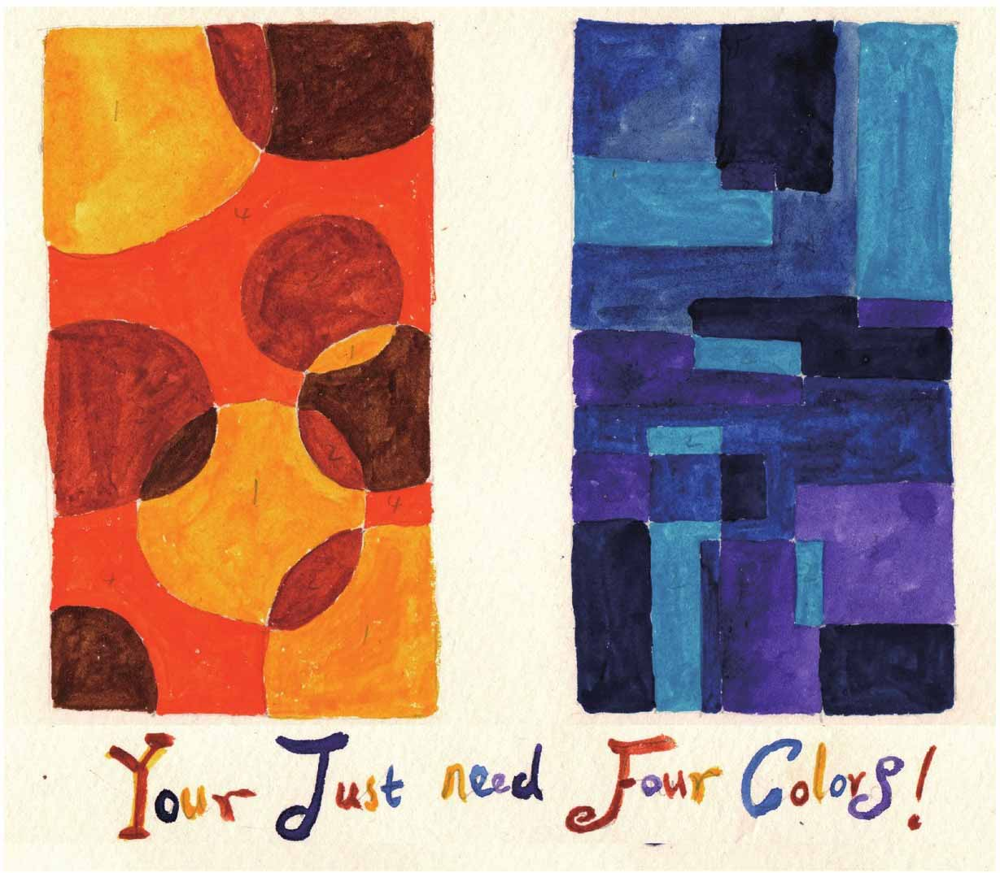

1852年，21岁的英国年轻人弗兰西斯·葛斯瑞（Francis Guthrie）刚从伦敦大学毕业，他发现了一个有趣的现象：“……当然，有共同边界的国家应该着不同的颜色，不过看上去，好像最少用四种颜色就够了。”
这个现象能不能从数学上加以证明呢？他和正在上大学的弟弟决心试一试。兄弟二人为证明这一问题忙活了很久，使用的稿纸堆了一大叠，可是研究工作却没有进展。

于是他向自己的老师，著名数学家德·摩根请教。但是德·摩根也不能解决这个问题，德·摩根便写信向哈密顿请教。
可能哈密顿对这类好像填图游戏的问题不太感兴趣，也可能是哈密顿当时正专注于四元数问题，总之，哈密顿对这个问题没有回复。
于是德·摩根继续宣传，逐渐有了较多的数学家关注这个问题。1878年，英国数学家凯莱也写了一篇论文来证明这个问题，但不久凯莱发现自己的证明是失败的。这件事激发了一个业余数学家艾尔弗雷得·布雷·肯普（Alfred Kempe）的兴趣。
肯普的证明过程非常冗长，尽管有人对其证明持怀疑态度，但这个证明还是被逐渐接受了，肯普由此被选入伦敦皇家协会。看起来四色问题已经得到解决。
但是，十年之后，希伍得（Percy Heawood）指出了肯普证明中的错误——原来四色问题挑战的大门一直都是开的呀——数学家们又一股脑儿趴在地图上忙活开了，不少年轻人希望借此一战成名。
借用肯普的证明方法，希伍得证明了一个五色定理——使用五种颜色可以将任意一张地图着色。既然没人构造那张四种颜色的地图，那么这张五色地图也算数学家们一个伟大的成果啊。
在四色填图方面，人们也取得了一些进展。一位数学家证明了4种颜色对于包含27个国家的地图是足够的，另一位数学家将这个数字增加到31，后来又有人将其增加到了35，如果以这种方式证明下去，似乎永远都不会有尽头。数学家们发现，他们可以检验某些特定结构的地图可以用四种颜色着色。但问题是，要检验的数量实在太多了——在证明的初始阶段，就有接近万种不同的地图构型要检验，而这种检验是无法手工完成的。

幸运的是，一位对此问题研究了多年的德国数学家沃尔夫冈·哈肯（Wolfgang Haken）得到了美国数学家和计算机专家阿佩尔（Kenneth Appel）的帮助，他们采用一些巧妙的方法将需要检验的构型数量降低到了2000以下。1976年，他们合作编制了一个程序，在一台IBM360上，程序运行了1200小时，最后，他们的程序“宣布”：四色猜想的证明完成了！
为庆祝这件大事，当地的邮局忙活开了，在当天发出的所有邮件上都加盖了特制邮戳，上写“四色足够”（Four colors suffice）！

但是，来自数学界的喝彩零零星星，一些人勉强接受了这项工作成果，但更多人持怀疑态度。问题的麻烦之处在于这是一个靠电脑来完成的证明，人们如何去检验证明过程中所依赖的那数不清的程序代码呢？
对于采用计算机程序的证明方式，数学家们不感冒地说：“一个好的证明应该像一首诗，而不是像电话号码一样的计算机代码。”
数学家波尔·阿·赫尔莫斯对哈肯与阿佩尔的证明不以为然的态度有一定的代表性，他认为计算机证明的可信度和算命差不多。
哈肯与阿佩尔也承认他们的证明不够简洁，那么“像诗一样”的数学证明是什么样的呢？
在欧几里得的《几何原本》中，他采用的证明方法是这样的，就是从人们普遍接受的真理或公理出发，通过逻辑论证一步一步最终推导出结论。举个例子说，就是类似证明两条直线相交对顶角相等、三角形内角和为180°这样的经典证明方法，它们被称为“标准欧几里得证明方法”，这种方法一直被数学家们公认为是证明新定理的唯一有效和权威的方法。
在数学家眼里，一个好的欧几里得证明方法是优美的。
不过，这里顺便提一句，欧几里得在每次完成证明时，喜欢在结尾处写上一句“证明完毕”，缩写成当时的罗马文字就是QED，表示Quod erat demonstrandum。这个缩写成了数学证明中的经典标签，沿用至今。但据说数学家高斯不喜欢使用这个标签。
试图解决四色问题的人最初有一个先入为主的假定，那就是这个问题可以用传统的方法来证明，不过呢，这个设想努力了100年都没有得到证实。哈肯与阿佩尔编写的程序是一种“枚举法”，就是逐一检验是否每张地图都可以用四种颜色着色，这个证明过程与传统的方法是那么的不同，缺少了数学家们期待的那种“原来如此”的精妙之处，这是很多人难以接受的原因。
所以说，四色问题折磨了数学家一百年之后，现在附带的又提出了一个新的问题：数学证明应该是什么样的，采用计算机程序的数学证明可以算是QED吗？哈哈。
